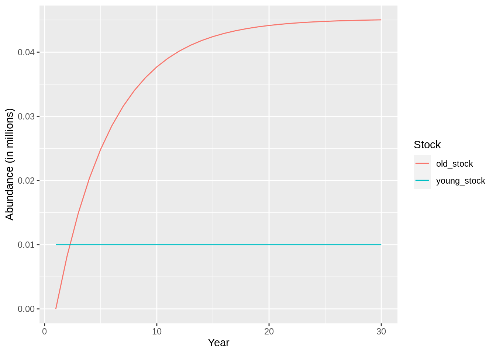
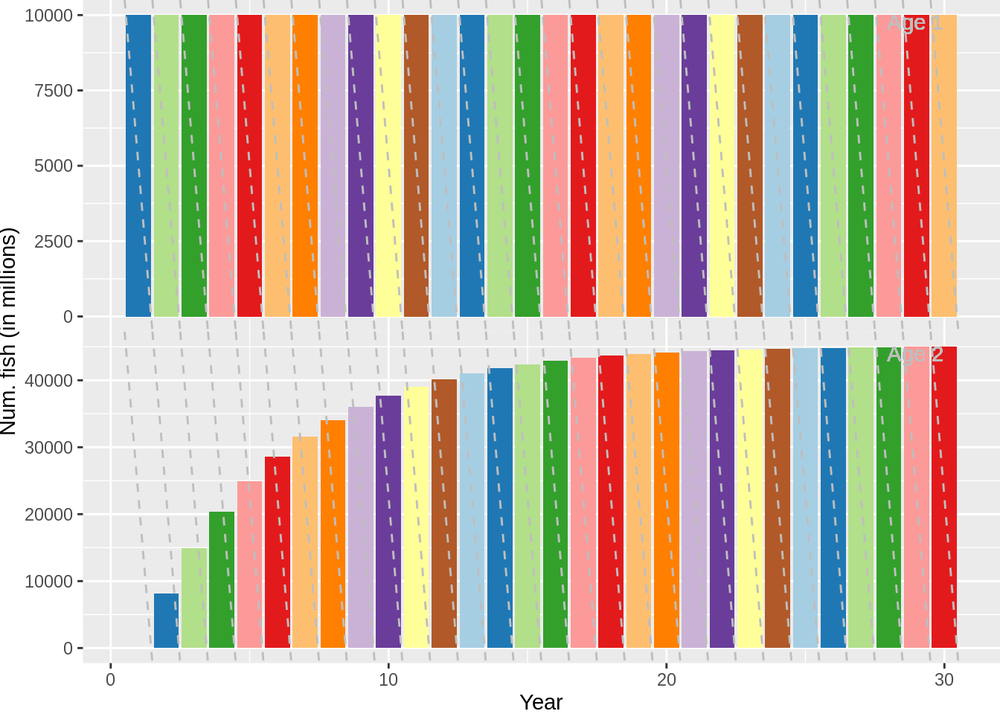
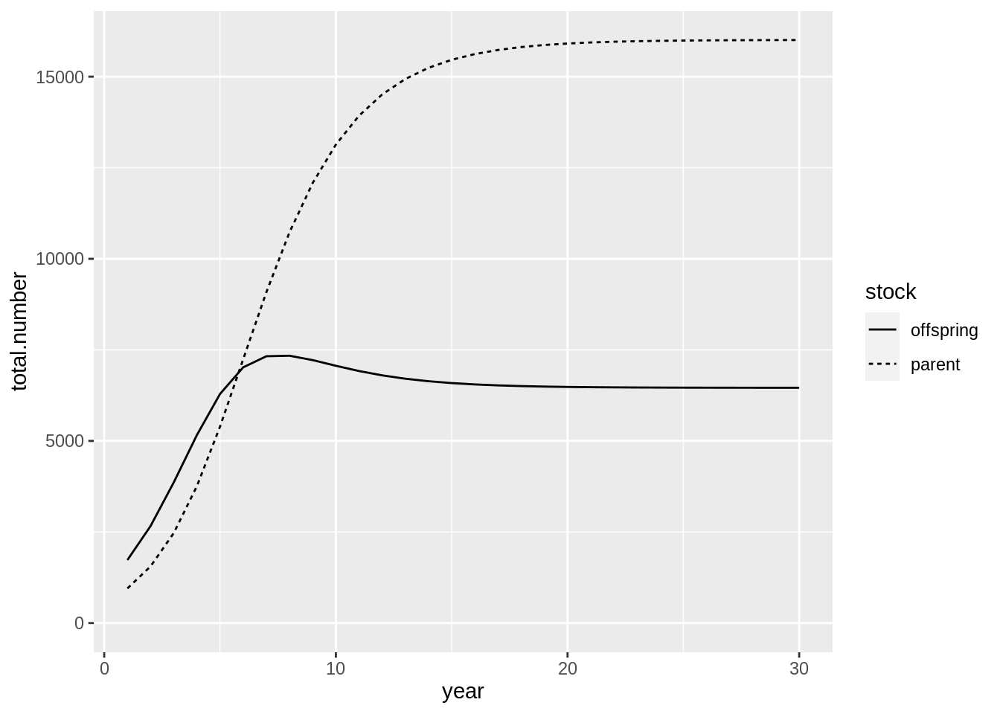
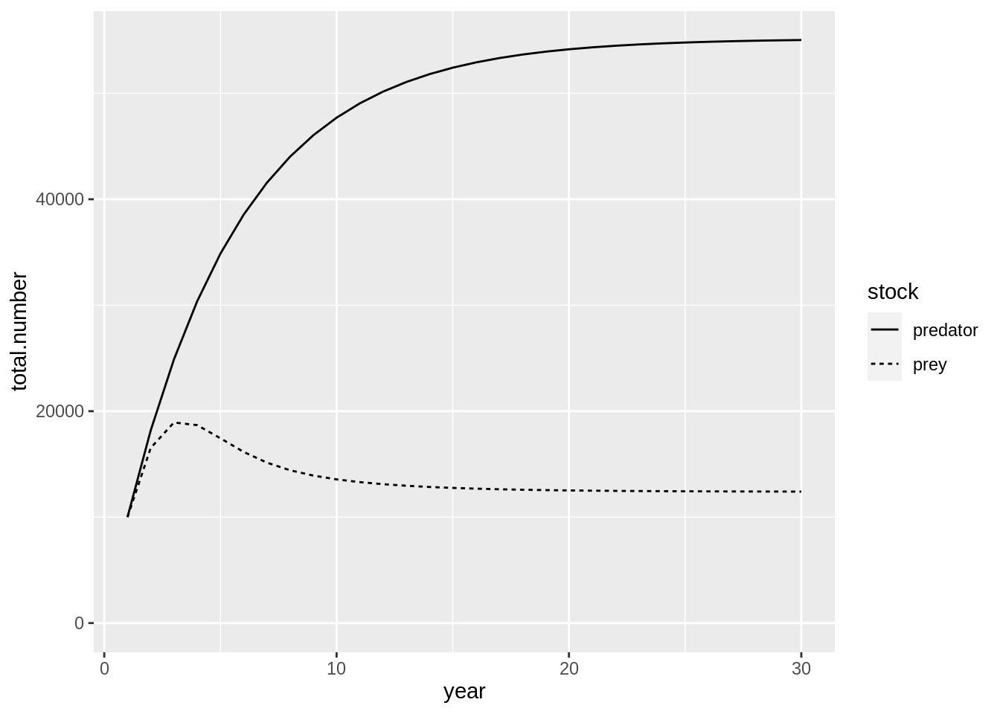

5 Defining stock interations
As we have already seen there are a number of ways we can define interactions between stocks. Here we will, however, explore further the various different mechanisms implemented in Gadget. These interaction can essentially be grouped into two categories:
- Fish entering stock due to a process in a related stock
- This can be either movement between stocks or spawning
- Fish is removed from a stock due to predation
We will illustrate these processes using a simple multistock model:
gd <- gadget.variant.dir('simple_multistock_model')
schedule <-
expand.grid(year = 1:30, step = 1:4) %>%
arrange(year)
gadgetfile('Modelfiles/area',
file_type = 'area',
components = list(list(areas = 1,
size = 1,
temperature = schedule %>%
mutate(area = 1, temperature = 5)))) %>%
write.gadget.file(gd)
gadgetfile('Modelfiles/time',
file_type = 'time',
components = list(list(firstyear = min(schedule$year),
firststep=1,
lastyear=max(schedule$year),
laststep=4,
notimesteps=c(4,3,3,3,3)))) %>% ## number of time steps and step length in months
write.gadget.file(gd)
stock_template <-
gadgetstock('stock_1',gd,missingOkay = TRUE) %>%
gadget_update('stock',
livesonareas = 1,
maxage = 1,
minage = 1,
minlength = 0,
maxlength = 2,
dl = 1) %>%
gadget_update('doesgrow',0) %>%
gadget_update('naturalmortality', 0.2) %>%
gadget_update('refweight',data=tibble(length=0:2,mean=0:2)) %>%
gadget_update('initialconditions',
normalparam = tibble(age = 1,
area = 1,
age.factor = 0,
area.factor =1,
mean = 1,
stddev = .1,
alpha = 1,
beta = 1)) %>%
gadget_update('doesrenew',
normalparam = schedule %>%
filter(step == 1) %>%
mutate(area = 1, ## where does the rec. take place
age = 1, ## age of recruits
number = 1, ## num. of recruits (x10 000)
mean = 1, ## mean length
stddev = .1, ## std in length
alpha = 1, ## a in w = aL^b
beta = 1))We will use the stock template to define multiple stocks to illustrate the various possible interactions the user is able to define in a Gadget model.
5.1 Fish recruits into a stock
We have already seen how to implment the most straitforward version of recruitment into a stock, that is the renewal process. To recap, the renewal process adds fish into a stock based on a predefined schedule on the number and age of fish at a given time step. The most obvious use of this feature is to define a non-parametric recruitment to a stock a the minimum age of the stock. However one can use it also to add migrations from a related to stock, where the dynamics of the related stock is not modelled. An example of this would be the sporadic migrations of cod from Greenlandic waters into Icelandic waters.
Movement between stocks can however be defined to more elaborate. We have already seen how maturation can be modelled as a two step approach, that is a combination of Maturation and Movement. Movement is the simplest approach as it simply takes the oldest fish of one stock and pushes it into a another stock, provided that this other stocks age range includes the maximum age of the first stock.
young_stock <-
stock_template %>%
gadget_update('stock',
stockname = 'young_stock') %>%
gadget_update('doesmove',
## be careful how you spell this
transitionstocksandratios = list(stock='old_stock',ratio = 1),
transitionstep = 4)
old_stock <-
stock_template %>%
gadget_update('stock',
stockname = 'old_stock',
minage = 2,
maxage = 2) %>%
gadget_update('doesrenew',0) %>%
gadget_update('naturalmortality', 0.2) %>%
gadget_update('initialconditions',
normalparam = tibble(age = 2,
area = 1,
age.factor = 0,
area.factor =1,
mean = 1,
stddev = .1,
alpha = 1,
beta = 1))
young_stock %>%
write.gadget.file(gd)
old_stock %>%
write.gadget.file(gd)
fit <- gadget.fit(wgts = NULL,gd=gd,steps = 2)## [1] "Reading input data"
## [1] "Running Gadget"
## [1] "Reading output files"
## [1] "Gathering results"
## [1] "Merging input and output"## better color scheme
scale_fill_crayola <- function(n = 100, ...) {
# taken from RColorBrewer::brewer.pal(12, "Paired")
pal <- c("#A6CEE3", "#1F78B4", "#B2DF8A", "#33A02C",
"#FB9A99", "#E31A1C", "#FDBF6F", "#FF7F00",
"#CAB2D6", "#6A3D9A", "#FFFF99", "#B15928")
pal <- rep(pal, n)
ggplot2::scale_fill_manual(values = pal, ...)
}
plot(fit,data='res.by.year',type='num.total')
plot(fit,data='stock.std') + scale_fill_crayola()
And this process can of course continue further. Two processes allow the user to define movement based on size or age. These are the maturation process and the straying process. These behave in a similar manner but there are key differences, in particular how you can define the movement. In the ling example the maturity process was a continuous process where the probability of a maturing at a certain length or age was determing using the following equation:
\[
p_{la} = \frac{1}{1+e^{-\alpha(l - l_{50}) - \beta(a - a_{50})}}
\]
For a stock to mature you need to set doesmature,maturityfunction and maturityfile. The maturityfile defines the maturation function parameters and to which stock(s) the immmature stock matures into. Gadget has three additional functions you can use to define movement from an immmature to a mature stock:
constantwhich is essentially the same as thecontinousfunction apart from the definition of thematuritysteps, i.e. when the maturation takes place.constantweightsame as above but the probability of maturation is now also a function of the body condition: \[ p_{la} = \frac{1}{1+e^{-\alpha(l - l_{50}) - \beta(a - a_{50}) - \gamma(k-k_{50})}} \] where the body condition, \(k\), is determined by dividing the reference weight to the modelled weightfixedlengthwhich is a knife-edge selection in terms of length. You need to define thematuritystepsandmaturitylengths.
The straying process is slightly different as it is thought of as the means to provide mechanisms to define processes such as dispersal between breeding components and different growth rates within the same stock due to different enviromental factors. To setup the straying process you will need to define when the straying occurs, where it occurs (i.e. what area) and what fish strays. The fish that strays is defined by specific length selection listed below:
constant: \(S_l = \alpha\)straightline: \(S_l = \alpha l + \beta\)exponential: \(S_l = \frac{1}{1+e^{\alpha(l-l_{50})}}\)
For our simple model we will define 20\(\%\) straying between two stock components, from stock_a to stock_b:
stock_a <-
stock_template %>%
gadget_update('stock',
stockname = 'stock_a') %>%
gadget_update('doesstray',
straysteps = 3,
strayareas = 1,
straystocksandratios = list(stock='stock_b',ratio = 1),
proportionfunction = list(sel_function='constant',alpha = 0.2))
stock_b <-
stock_template %>%
gadget_update('stock',
stockname = 'stock_b') %>%
gadget_update('doesrenew',0) %>%
gadget_update('initialconditions',
normalparam = tibble(age = 1,
area = 1,
age.factor = .1,
area.factor =1,
mean = 1,
stddev = .1,
alpha = 1,
beta = 1))
stock_a %>%
write.gadget.file(gd)
stock_b %>%
write.gadget.file(gd)
fit <- gadget.fit(wgts = NULL,gd=gd,steps = 2)## [1] "Reading input data"
## [1] "Running Gadget"
## [1] "Reading output files"
## [1] "Gathering results"
## [1] "Merging input and output"fit$res.by.year %>%
filter(stock %in% c('stock_a','stock_b')) %>%
ggplot(aes(year,total.number,lty = stock)) + geom_line()
5.1.1 Excercise
- Depletion of stock components is often a concern. Using the straying mechanism set up a three stock model where individual are slowly dispersed between all three components. Define a fishing fleet that targets only one of the stocks and investigate how different dispersion levels affect the depletion of all stocks.
- Gadget allow you to set up a catch at age model. Use the movement mechanism to define a model with a maximum age of 10, where each age is a separate stock. How would you define the fleets for this model so you could use commercial catch at age directly into the model?
5.2 Spawning
The spawning process allows the user to define recruits into as stock as function of the size of another stock. A number of relationships can be defined:
fecundity\[R = p_0 \sum_a\sum_l l^{p_1}a^{p_2}N_{al}^{p_3}W_{al}^{p_4}\]simplessb\[R = \mu S\] where \(S = \sum_a\sum_l N_{al}W_{al}\)ricker\[R = \mu Se^{-\lambda S}\]bevertonholt\[R = \frac{\mu S}{\lambda + S}\]hockeystick\[R = R = \begin{cases} R_0,&\text{If } B_{lim} \leq S \\ \frac{R_0S}{B_{lim}} & \text{If } 0 \leq S \leq B_{lim} \end{cases} \]
In addition the user can define using the same length based selection function as for straying which of the stock “spawns” and what happens to them, i.e. what mortalities are applied to the stock and changes in condition. The spawning stock is updated according to the following equations: \[ N_l = N_l(1 + P_l(e^{-m_l} - 1)) \] \[ W_l = W_l\frac{1 + P_l((2-w_l)e^{-m_l} -1)}{(1 + P_l(2e^{-m_l} -1))} \] where \(P_l\) is proportion that will spawn, \(m_l\) is the mortality for and \(w_l\) is the weight loss for length group \(l\). To illustrate how to set up spawning for a particular stock we will use the simple stock templates from above and use those to define parent and offspring stocks:
parent <-
stock_template %>%
gadget_update('stock',
stockname = 'parent') %>%
gadget_update('doesrenew',0) %>%
gadget_update('doesspawn',
spawnsteps = 1,
spawnareas = 1,
firstspawnyear = 1,
lastspawnyear = 30,
spawnstocksandratios = list(stock='offspring', ratio = 1),
proportionfunction = list(sel_func = 'constant', alpha = 1),
mortalityfunction = list(sel_func = 'constant', alpha = 0),
weightlossfunction = list(sel_func = 'constant', alpha = 0),
recruitment = list(spawn_function = 'ricker', mu = 2, lambda = 1e-4),
stockparameters = list(mean = 1,
stddev = .1,
alpha = 1,
beta = 1)) %>%
gadget_update('initialconditions',
normalparam = tibble(age = 1,
area = 1,
age.factor = 1,
area.factor = .1,
mean = 1,
stddev = .1,
alpha = 1,
beta = 1))
offspring <-
stock_template %>%
gadget_update('stock',
stockname = 'offspring',
minage = 0,
maxage = 0) %>%
gadget_update('initialconditions',
normalparam = tibble(age = 0,
area = 1,
age.factor = 0,
area.factor = 0,
mean = 1,
stddev = .1,
alpha = 1,
beta = 1)) %>%
gadget_update('doesrenew',0) %>%
gadget_update('doesmove',
transitionsteps = 4,
transitionstocksandratios = list(stock='parent',ratio=1))
parent %>%
write.gadget.file(gd)
offspring %>%
write.gadget.file(gd)
fit <- gadget.fit(wgts = NULL, gd = gd, steps = 2)## [1] "Reading input data"
## [1] "Running Gadget"
## [1] "Reading output files"
## [1] "Gathering results"
## [1] "Merging input and output"fit$res.by.year %>%
filter(stock %in% c('parent','offspring')) %>%
ggplot(aes(year,total.number,lty = stock)) + geom_line() +
expand_limits(y=0)
The code above defines a Ricker recruitment function between the parent and offspring stocks. As evident from the graph above the relationship between the two stocks is a fairly deterministic. This type of relationship, however, is hardly ever observed without error (both in process and observation). To include process variation into the model Gadget has another trick up its sleave, Time variables.
5.2.1 Time variables
Time variables allow Gadget to change the value of parameters with time. They are an extension to the Gadget formulae functionality and can be use (almost) where ever you can use Gadget formulae. To define a time variable you will need to define a data frame with the start time for a particular value, which will be valid until the next change. Example uses might be shifts fleet selection due to changes in regulation and temperature effects in growth. In the case of the simple stock recruitment relationship above we may want change the value for \(\mu\) with time. To introduce time variables into this model you will need to create a special file:
mu_time <-
gadgetfile('Modelfiles/mu_time',
file_type = 'timevariable',
components = list(list('mu_time',
data = schedule %>%
filter(step == 1) %>%
mutate(value = 2*rlnorm(n = 30, sdlog = 0.2)))))
mu_time %>%
write.gadget.file(gd)
mu_time## ; Generated by Rgadget 0.5
## mu_time
## data
## ; year step value
## 1 1 2.04828522481477
## 2 1 1.93080982011214
## 3 1 2.64834407681078
## 4 1 2.11463558012716
## 5 1 2.31191411558799
## 6 1 1.54044555246455
## 7 1 1.96451713146509
## 8 1 1.46530982098884
## 9 1 1.73075077353238
## 10 1 2.5794347729634
## 11 1 2.24613417093631
## 12 1 2.45402271389924
## 13 1 1.3431789183443
## 14 1 2.63394976055913
## 15 1 2.28169439407908
## 16 1 1.78835028067647
## 17 1 2.27936162738224
## 18 1 2.13066520253464
## 19 1 2.50031020052314
## 20 1 2.41177273342478
## 21 1 1.47870761099084
## 22 1 1.6333915167802
## 23 1 2.10108224908664
## 24 1 1.87902708797292
## 25 1 1.90187192329423
## 26 1 1.40202942219348
## 27 1 2.28160166184842
## 28 1 1.62214409151318
## 29 1 2.17854422471164
## 30 1 1.9339823550804and then we need to replace value for \(\mu\) with this file:
parent <-
parent %>%
gadget_update('doesspawn',
spawnsteps = 1,
spawnareas = 1,
firstspawnyear = 1,
lastspawnyear = 30,
spawnstocksandratios = list(stock='offspring', ratio = 1),
proportionfunction = list(sel_func = 'constant', alpha = 1),
mortalityfunction = list(sel_func = 'constant', alpha = 0),
weightlossfunction = list(sel_func = 'constant', alpha = 0),
recruitment = list(spawn_function = 'ricker', mu = "Modelfiles/mu_time", lambda = 1e-4),
stockparameters = list(mean = 1,
stddev = .1,
alpha = 1,
beta = 1))
parent %>%
write.gadget.file(gd)
fit <- gadget.fit(wgts = NULL, gd = gd, steps = 2)## [1] "Reading input data"
## [1] "Running Gadget"
## [1] "Reading output files"
## [1] "Gathering results"
## [1] "Merging input and output"fit$res.by.year %>%
filter(stock %in% c('parent','offspring')) %>%
ggplot(aes(year,total.number,lty = stock)) + geom_line() +
expand_limits(y=0)
5.2.2 Excercise
- Modify the code above such that the spawning is split into two stocks, representing e.g. either the male or female part of the stock.
- Using the simple stock template define a auto-spawning stock, i.e. a stock that spawns into it self.
- Instead of the Ricker function try to parametrise the Beverton and Holt recruitment function for the example above.
- In the ling example consider how you would project the recruitment into the future.
5.3 Consumption
In Gadget there are a number of predator-prey relations that can be defined. They include the obvious case where one substock predates the other. Additionally a cannibalistic relationship can be defined if the substocks are modelled as an immature and a mature part of the same species. The predation in Gadget is implemented as follows. Each predator will conceptually be assigned availability of a certain prey in comparison with other food sources and a feeding level, i.e., fraction of available food the predator wants to consume. Combining these two terms the amount that the predator wants to consume is calculated.
The availability of a certain prey \(p\) for a predator \(P\) is determined by the prey biomass per length group (\(N_{l}W_{l}\), where \(W_l\) is the weight at length \(l\)) and a length based suitability function listed here.
In the simple predator-prey relation between the substocks in Gadget the prey availability to a predator becomes \[\frac{F_{Ll}}{\sum_{l'}F_{Ll'}+OA}\] where \[F_{Ll} = (S_{Pp}(L,l) N_{pl}W_{pl})^{d_p}\] is the prey biomass of length \(l\) that the predator could consume, \(W_{pl}\) is the average weight for prey of length \(l\), \(d_p\) is the preference, and \(O\) is the density, per unit area, of other unspecified food sources and \(A\) is the size of the area.
The feeding level of the predator is \[\Psi_L = M_L \frac{\sum_{l'}F_{Ll'}+OA}{\sum_{l'}F_{Ll'}+OA+HA}\] where \(M_L\) is the maximum consumption of a predator of length \(L\) for a particular time step length \(\Delta t\). It is determined by \[M_L=m_0L^{m_4}\Delta t e^{(m_1 T - m_2 T^3)}\] where \(m_0\) to \(m_4\) are user defined constants. \(H\) is the density (biomass per area unit) of available food at which the predator can consume half maximum consumption. Note that \(H\) should reflect how able the predator is to pursue its prey, which should factor in variables such as temperature and the cost of search. \(H\) determines therefore how quickly the predators consumption reaches \(M_L\). \(H=0\) would indicate that the predator would easily consume \(M_L\) of the available biomass. A larger value for \(H\) would indicate that prey is harder to find and therefore prey needs to be more abundant for the predator to reach \(M_L\).
Given the feeding level and the prey availability the desired consumption of all predators of length \(L\) is
\[
\begin{split}
C_{L,l}&=N_{L}\Psi_{L}\left[\frac{F_{Ll}}{\sum_{l'}F_{Ll'}+OA}\right]\\
&=N_{L}M_{L}\frac{F_{Ll}}{\sum_{l'}F_{Ll'}+OA+HA}\\
\end{split}
\]
For each prey an upper limit needs to be set on the total amount consumed by all predators, including the fleets, to prevent more consumption than the available biomass. To prevent this overconsumption when fitting a Gadget model the understocking likelihood component is usually added to the likelihood.
To illustrate how one can set up a predator prey relationship in Gadget we will take the simple case of one stock, predator, predating another, prey. First we will need to set up the prey stock:
prey <-
stock_template %>%
gadget_update('stock',
stockname = 'prey') %>%
gadget_update('iseaten',
## define how many KJ per gram
energycontent = 1) We also have to define something called “Otherfood”. Otherfood refers to other non-dynamic food items that the predator consumes. It is usually defined in order for the stock to consume something else in the absense of the prey.
otherfood <-
gadgetfile('Modelfiles/otherfood',
file_type = 'otherfood',
components = list(component=list(foodname = 'otherfood',
livesonareas = 1,
lengths = list(min = 1, max = 2),
energycontent = 1,
amount = gadgetfile('Data/otherfood',
component = list(schedule %>%
mutate(area = 1, food_name = 'otherfood',amount = 1e6))))))The predator stock is bit more involved:
predator <-
stock_template %>%
gadget_update('stock',
stockname = 'predator') %>%
gadget_update('doeseat',
suitability = list(paste('\n',prey = 'prey',type='function',suit_func = 'constant', alpha = 1,'\n', sep = '\t'),
paste(prey = 'otherfood',type='function',suit_func = 'constant', alpha = 0.5, sep = '\t')),
preference = paste('\n','prey',1,'\n','otherfood', 1),
maxconsumption = list(m0=1,m1=0,m2=0,m3=0),
halffeedingvalue = 0.2)Now save this all to file and run Gadget:
prey %>%
write.gadget.file(gd)
predator %>%
write.gadget.file(gd)
otherfood %>%
write.gadget.file(gd)
fit <- gadget.fit(wgts = NULL, gd = gd, steps = 2)## [1] "Reading input data"
## [1] "Running Gadget"
## [1] "Reading output files"
## [1] "Gathering results"
## [1] "Merging input and output"fit$res.by.year %>%
filter(stock %in% c('predator','prey')) %>%
ggplot(aes(year,total.number,lty = stock)) + geom_line() +
expand_limits(y=0)
fit$predator.prey %>%
group_by(year) %>%
summarise(num = sum(number_consumed)) %>%
ggplot(aes(year,num)) + geom_line()
5.3.1 Excercise
- In the example above, insert variable names instead of direct numbers for the selection and predation parameters. Investigate the effects of changing the selection parameter has on the consumption. E.g:
- Change the otherfood time series such that it is more variable
- Change the recruitment of both predator and prey
- Add a new prey